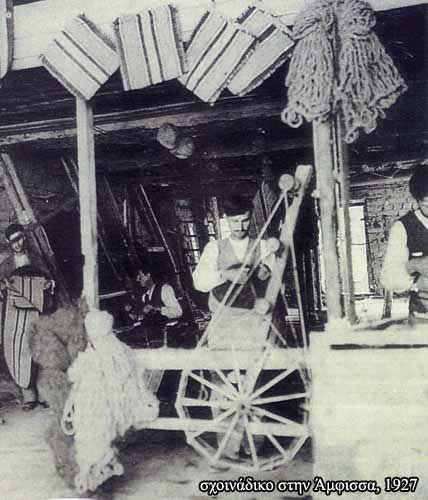

| «Μεγάλη ανάπτυξη γνώρισε η πόλη…», μαρτυρία του Δημάρχου ¶μφισσας Νίκου Φουσέκη  «Μεγάλη ακμή γνώρισε η πόλη κυρίως στην περίοδο του μεσοπολέμου. Επειδή η ανάπτυξη της ευρύτερης περιοχής ήταν κυρίως ποιμενική άνθισαν βιοτεχνίες που στηρίχθηκαν στον κτηνοτροφικό τομέα. Τα Σαλωνίτικα κουδούνια, φτιαγμένα από άξιους τεχνίτες, ήταν περιζήτητα όχι μόνο στην Ελλάδα αλλά και σε πολλές χώρες του εξωτερικού (Σερβία, Βουλγαρία, Τουρκία). Πολλές βιοτεχνίες στράφηκαν στον τομέα της μεταποίησης των πρώτων υλών (μαλλί, δέρμα) της κτηνοτροφίας. Στην επεξεργασία του δέρματος μεγάλη ανάπτυξη γνώρισαν τα ταμπάκικα (βυρσοδεψεία), στη μεταποίηση του μαλλιού δραστηριοποιήθηκαν τα σχοινάδικα». Μαρτυρία του κ. Νίκου Φουσέκη, Δημάρχου ¶μφισσας |
||